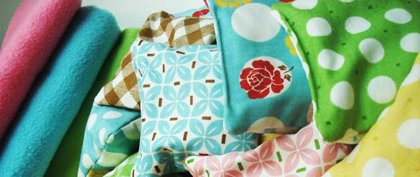
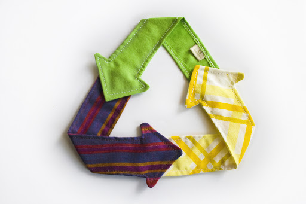

Reuse is the action or practice of using an item, whether for its original purpose (conventional reuse) or to fulfil a different function (creative reuse or repurposing).
When it comes to clothing,i nstead of sending it to landfill, why not give it a second use?
Use your creativity to breathe new life into old clothes. Customisation is a fun way to create something unique and one of a kind — plus it’s a fast growing fashion trend.
You can always patch your clothes up or create a new style out of them! Transform your jean jacket into the effortless vest, or cut the bottoms of your jeans and add some lace to make shorts in time for warmer weather. A simple sewing class online or workshop will give you all the tools you need to revitalize your most beloved pieces.
Make a completely new garment out of the fabric of your old clothes. It’s best to start with an item like a dress or large T-shirt where more fabric will be available to begin with. Use your imagination to cut and sew yourself something new, for example a belt, tube top or skirt.

Recycle
Recycling is the process of converting waste materials into new materials and objects. The recyclability of a material depends on its ability to reacquire the properties it had in its virgin state. It is an alternative to "conventional" waste disposal that can save material and help lower greenhouse gas emissions. Recycling can prevent the waste of potentially useful materials and reduce the consumption of fresh raw materials, thereby reducing: energy usage, air pollution (from incineration), and water pollution (from landfilling).
“Recycling” clothing doesn’t necessarily mean only sending it to get shredded up and turned into something new.
If you’ve got items in great condition, and want to make a little extra cash, take them to a local consignment shop or thrift store, or try a trusted online reseller.
There are tons of amazing sustainable resources and organizations that will take your too-far-gone clothing, accessories and textile items, and repurpose them for other uses. Uses like making home insulation, pillow stuffing, car seat stuffing, and even “new” fabric made from recycled fibers.
According to RecycleBank, clothing made of cotton and other natural fibers can be composted, as long as they aren't blended with synthetic fibers like polyester. To compost these, shred them finely and remove any attachments, like zippers or buttons.

Upcycle
Upcycling, also known as creative reuse, is the process of transforming by-products, waste materials, useless, or unwanted products into new materials or products of better quality and environmental value.
Upcycle your old tees and turn them into grocery or produce bags for food shopping or harvesting. Why bother buying them in store when they are so easy to make at home? Pop your fruit and veggies in your homemade bags to save money and avoid single-use plastic bags at the same time. Who knows, they might even taste a little better coming out of such ecologically and sustainably made bags.
Foil? Plastic wrap? They are so yesterday. Any kind of old clothing can become your partner in crime when it comes to food wrapping and covering up leftovers. All you need is a piece of fabric of the desired size and shape and some produce of our fuzzy little friends, the bees.
Have some cotton shirts that you just aren’t wearing anymore? Don’t throw them away! There’s an easy way they can replace single-use cotton pads in your daily beauty routine. Just cut same-sized rounds or squares out of old cotton fabric you find, and sew them together on the outer edges.